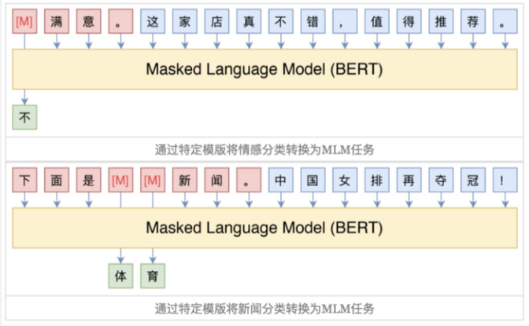
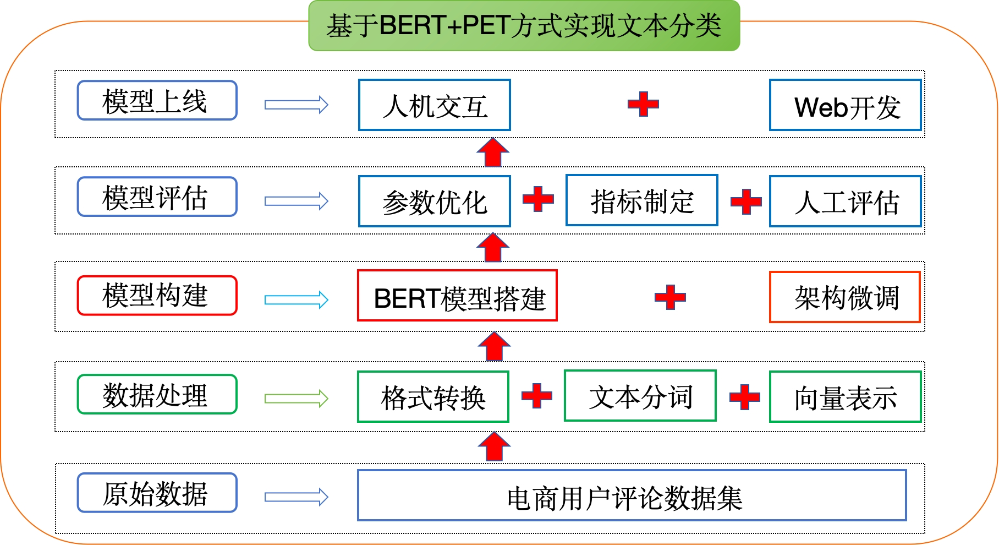
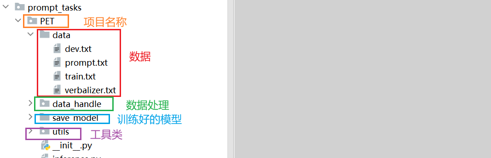

🧱 BERT + PET 方案设计与项目架构
🧭
工程实践提示：示例中的模型地址、数据库账号和密钥均应通过环境变量或独立配置文件注入；部署前还需补充权限控制、输入校验、超时重试、日志脱敏、来源引用与离线评估。
学习目标
- 理解PET方式的思想
- 安装项目必备的工具包
- 了解基于BERT+PET方式实现文本分类的整体项目架构
1 项目介绍
- 本章我们将以"电商平台用户评论"为背景，基于BERT+PET（硬模版）方法实现评论文本的准确分类
2 PET回顾
- PET（PatternExploiting Training）的核心思想是：根据先验知识人工定义模版，将目标分类任务转换为与MLM一致的完形填空，然后再去微调MLM任务参数。

图中示例1: 情感分类任务（好评还是差评），原始文本:这家店真不错,值得推荐。PET模板: [MASK]满意。Label:不/很。标签词映射（Label Word Verbalizer）：例如如果
[MASK]预测的词是“不”，则认为是差评类，如果是“很”，则认为是好评类。图中示例2:新闻分类任务（多分类），原始文本：中国女排再夺冠！PET模版：下面是[MASK] [MASK]新闻，Label：体育/财经/时政/军事
- PET 方法的核心步骤
PET方法整体过程可以概括为：首先，将下游任务通过人工模板（pattern）转化为语言模型的填空任务，并通过verbalizer把预测的词映射到任务标签，从而用少量标注样本训练多个“子模型”；接着，这些子模型在大量未标注数据上生成伪标签，形成软标注数据；最后，通过知识蒸馏，训练一个单一的学生模型来学习多个子模型的预测分布，从而兼顾鲁棒性和泛化能力。在这里，我们只需要完成分类任务，所以只需要实现第一步即可。
具体步骤如下：
1）定义任务模式 (Task Patterns)：
- 首先，你需要将下游任务的输入和输出，转换为一种 包含空白（[MASK] 或其他特殊标记）的自然语言句子模板 。这些模板被称为“模式”。
- 示例 (情感分类)：
- 原始输入：
这部电影太棒了！标签：积极 - POFT 模式：
这部电影太棒了！这是一部____的电影。（其中____是待填充的空白）
- 原始输入：
- 示例 (问题回答 - 抽取式)：
- 原始输入：
上下文：北京是中国的首都。问题：中国的首都是哪里？答案：北京 - POFT 模式：
根据上下文：北京是中国的首都。中国的首都是哪里？答案是____。
- 原始输入：
2） 定义标签映射 (Verbalizer)：
- 对于任务的每个标签（或答案），你需要将其映射到 PLM(预训练语言模型) 词汇表中的一个或多个 具体词汇 。
- 示例 (情感分类)：
积极→好,棒,优秀消极→差,烂,糟糕
- 示例 (问题回答)： 答案本身就是模型需要生成的词语。
3） 构造训练样本：
- 将你的 所有有标签的训练数据 ，根据定义的模式和标签映射进行转换。
- 对于每个样本，输入变成模式化的句子，而模型的训练目标是在空白处生成正确的 Verbalizer 词汇（或答案词汇）。
4） 全量微调 PLM：
- 在这些 模式化 、 转换后的训练数据 上，对 整个预训练语言模型进行全量微调 。
- 微调的目标函数通常是 交叉熵损失 ，旨在最大化模型在空白处预测正确 Verbalizer 词汇的概率。这实际上是回归到 PLM 预训练时的 语言模型目标 （如掩码语言模型或文本生成）。
- 区别于 Prompt Engineering： PFT 在这里 更新模型的所有参数 ，而不仅仅是 Prompt 向量。
- 区别于传统 Fine-tuning： 传统 Fine-tuning 可能是在 PLM 上添加一个专门的分类头或抽取层进行微调。而 POFT 则是让 PLM 通过 预测词汇 来完成任务，更接近其预训练的方式。
5） 推理阶段：
- 对于新的输入，同样通过模式进行转换。
- 将转换后的输入送入微调后的 PLM。
- 模型会在空白处生成最可能的词汇。通过 Verbalizer，将这些预测的词汇反向映射回任务的原始标签或答案。
- 例如，如果模型预测
好的概率最高，就将其映射为积极。
- 例如，如果模型预测
3 环境准备
本项目基于 torch+ transformers 实现，运行前请安装相关依赖包：
- python==3.10
- transformers==4.40.2
- torch==2.5.1+cu121
- datasets==3.6.0
- scikit-learn==1.7.0
4 项目架构
项目架构流程图：

项目整体代码介绍：

小结总结
本章节主要介绍了项目开发的背景及意义，明确了项目的整体架构，并对项目中整体代码结构进行了介绍。